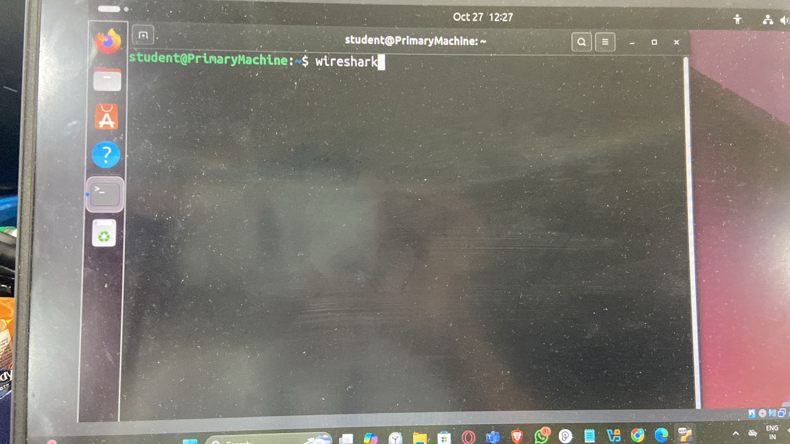
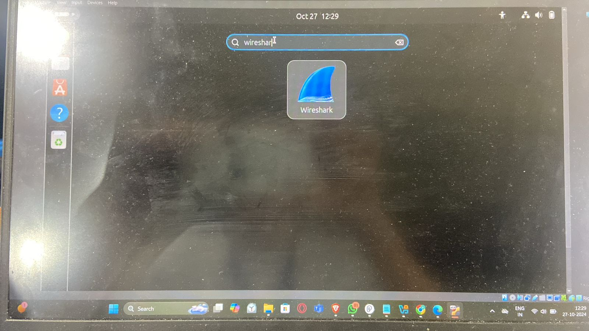
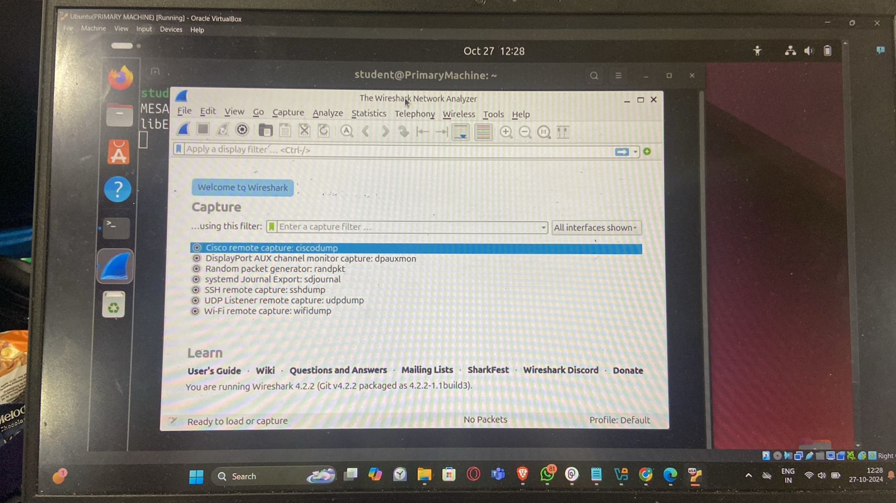

Unauthorized access
Definition: Unauthorized access is the act of gaining entry to a system, network, or data resource without proper permissions. This can happen through various methods, such as exploiting vulnerabilities, phishing, or using stolen credentials.
Importance of Understanding Unauthorized Access Data Security: Protecting sensitive information, such as personal identifiable information (PII) and financial records, is crucial to prevent data breaches.
Regulatory Compliance: Many industries face strict regulations regarding data protection. Failing to secure information can lead to fines and legal repercussions.
Reputation Management: Data breaches can damage an organization's reputation, eroding customer trust and resulting in financial losses
Incident Prevention: Understanding unauthorized access helps organizations strengthen security measures, reducing the likelihood of future breaches.
Mechanisms of Unauthorized Access
Exploiting Vulnerabilities: Attackers may take advantage of outdated software or system flaws to gain access.
Cloud Service Models
Cloud architecture encompasses several service models, each offering different levels of control and functionality:
Phishing Attacks: Cybercriminals trick users into revealing credentials through fraudulent emails.
Brute Force Attacks: Automated tools guess passwords by trying multiple combinations until they succeed.
Credential Theft: Stolen or leaked user credentials from data breaches can be used to access systems.
Investigative Processes for Unauthorized Access
Preparation:
Security Policies: Establish clear access controls and data handling protocols. Incident Response Plan: Develop a structured response plan outlining roles and procedures. Detection:
Theory
The primary objective of studying computer organization is to understand the fundamental components of a computer system and how they interact to perform various computational tasks. It focuses on the internal working mechanisms, data processing, and the flow of control within the system.
Through this knowledge, students and professionals gain insights into how different hardware components like processors, memory units, and input/output devices work together efficiently. The objective is to enable learners to identify and analyze performance bottlenecks, understand the principles of hardware-software integration, and optimize system performance.
Another key objective is to equip learners with the skills to design and develop better computing systems by making informed decisions regarding trade-offs in cost, performance, and power consumption. Understanding computer organization also helps in troubleshooting hardware issues and developing hardware-aware software that takes advantage of the underlying architecture for optimal performance.
Ultimately, the goal is to build a solid foundation that prepares individuals for advanced topics in computer architecture, embedded systems, and system design, fostering innovation and technological advancements in computing.
Containment: Isolate affected systems to prevent further access Recovery: Restore normal operations while enhancing security measures.Analysis:
Timeline Reconstruction: Create a detailed timeline of events related to the breach.
Root Cause Analysis: Identify exploited vulnerabilities to improve security.
Impact Assessment: Evaluate the breach's extent and its implications.
Conclusion
Unauthorized access is a significant threat in the digital landscape. As organizations increasingly rely on cloud
services and interconnected systems, understanding and preventing unauthorized access is critical. By implementing
robust security measures and effective incident response strategies, businesses can protect sensitive data and
maintain customer trust.
Lab Experiments
Upon completing this lab, students will be equipped with the skills to analyze network traffic using Wireshark. Specifically, they will be able to:
- Identify the Protocol Used for Communication: Students will learn how to recognize various protocols (e.g., HTTP, FTP, TCP, UDP) involved in packet exchanges, which is essential for understanding how data is transmitted across networks.
- Identify Credentials Used by Source and Destination: The lab will teach students to extract sensitive information such as usernames and passwords from the captured packets, highlighting the importance of security in data transmission.
- Analyze TCP Stream for a Standard View: Students will gain proficiency in analyzing the TCP stream to visualize the data flow between a client and server, which is crucial for troubleshooting and understanding session states.
- Understand Activities Performed by Source or Destination: The lab will guide students in identifying specific activities or commands executed by either the source or destination during a session, providing insight into network interactions.
- Examine Status Codes and Commands Used: Students will learn to recognize status codes and commands within protocols (e.g., FTP commands), which are important for diagnosing the success or failure of requests.
Tools and Techniques Involved
Windows/Linux Machine: Students will use either operating system to run Wireshark and capture network traffic.
Wireshark: A powerful network protocol analyzer that allows users to capture and interactively browse the traffic running on a computer network.
Anticipated Learning Outcomes
Upon completion of this lab, students should be able to confidently answer the following questions:
- Identify Protocols Used by Attackers: Students will analyze captured traffic to determine which protocol (e.g., FTP, SSH) was exploited by an attacker to gain access to a victim’s directory.
- Extract Username and Password: The lab will enable students to locate the username and password used by the attacker, reinforcing the importance of securing credentials during data transmission.
- Analyze TCP Stream: Students will be able to dissect the TCP stream, understanding the sequence of packets and how they contribute to the overall session.
- Understand FTP Status Codes: Students will interpret FTP commands and their corresponding status codes, which are vital for understanding server responses and the success of operations.
Lab Instruction
Description for Photo 1: This is a brief description or caption for the first photo.

Description for Photo 2: This is a brief description or caption for the second photo.

Description for Photo 3: This is a brief description or caption for the third photo.
References
- Wireshark Ask Community: A community-driven platform where users can ask questions and share knowledge about Wireshark.
- Wireshark Documentation: Official documentation detailing various filters and commands available in Wireshark for effective traffic analysis.